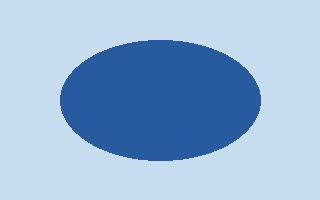

<!doctype html>
<html lang="en-GB">
<head>
  <meta charset="utf-8">
  <title>The Quiet Art of Reading Long Articles | Example Journal</title>
  <meta property="og:site_name" content="Example Journal">
  <meta name="author" content="Ada Example">
  <meta property="article:published_time" content="2026-03-14T09:30:00Z">
  <style>body { font-family: sans-serif; }</style>
  <script>window.fixtureScriptRan = true;</script>
</head>
<body>
  <header><nav><a href="/">Home</a> · <a href="/about">About</a> · <a href="/subscribe">Subscribe</a></nav></header>
  <main>
    <article>
      <h1>The Quiet Art of Reading Long Articles</h1>
      <p class="byline">By Ada Example</p>
      <p>Reading long articles on a screen is tiring. Many people prefer to move what they want to read to a device built for reading, where there are no notifications, no adverts and no autoplaying videos competing for attention. This fixture exists to test that the converter keeps the article and leaves the rest of the page behind.</p>
      <p>The paragraph you are reading includes <a href="#notes">a link to the notes section</a>, <a href="#missing-anchor">a link to a missing anchor</a>, <a href="other-page.html">a relative link</a>, <a href="javascript:alert(1)">a javascript link</a>, and <a href="https://example.com/" onclick="alert(1)" data-tracking="xyz" jsaction="click">an absolute link with junk attributes</a>. It also contains a control character here:&#x1;end.</p>
      <figure>
        
        <figcaption>A JPEG image, embedded as-is.</figcaption>
      </figure>
      <h2>Images in different formats</h2>
      <p>Some sites serve modern image formats. The converter should embed JPEG, PNG and GIF images directly, and convert other formats such as WebP and SVG so that more readers can display them. Images that cannot be downloaded should be left out rather than breaking the book.</p>
      <p></p>
      <picture>
        <source srcset="chart.webp" type="image/webp">
        
      </picture>
      <p> An SVG icon sits at the start of this paragraph, which is long enough for Readability to treat it as content worth keeping in the final article text.</p>
      <p> The image before this sentence does not exist on the server, so it should be skipped and replaced by its alternative text.</p>
      <p> The image before this sentence comes from another origin without CORS headers, so the browser will not let the converter download it.</p>
      <h2>Odd markup</h2>
      <p>Pages contain all sorts of markup that is not valid in an EPUB. Here is a <custom-widget>custom element</custom-widget>, a <font color="red">font tag</font>, and a <time datetime="2026-03-14">date</time>. The converter should unwrap these and keep their text.</p>
      <table border="1" align="center"><tr><th scope="col">Format</th><th scope="col">Handled</th></tr><tr><td>JPEG</td><td>Directly</td></tr><tr><td colspan="abc">WebP</td><td>Converted</td></tr></table>
      <h2 id="notes">Notes</h2>
      <p>This is the notes section that the internal link points at. It is the end of the article, and everything after it on the page is site furniture that should not appear in the EPUB at all.</p>
      <ol reversed start="3"><li>Third</li><li>Second</li><li>First</li></ol>
    </article>
  </main>
  <aside><h3>Related</h3><ul><li><a href="/a">Another article</a></li><li><a href="/b">Yet another</a></li></ul></aside>
  <footer><p>© Example Journal. <a href="/privacy">Privacy</a></p></footer>
</body>
</html>
